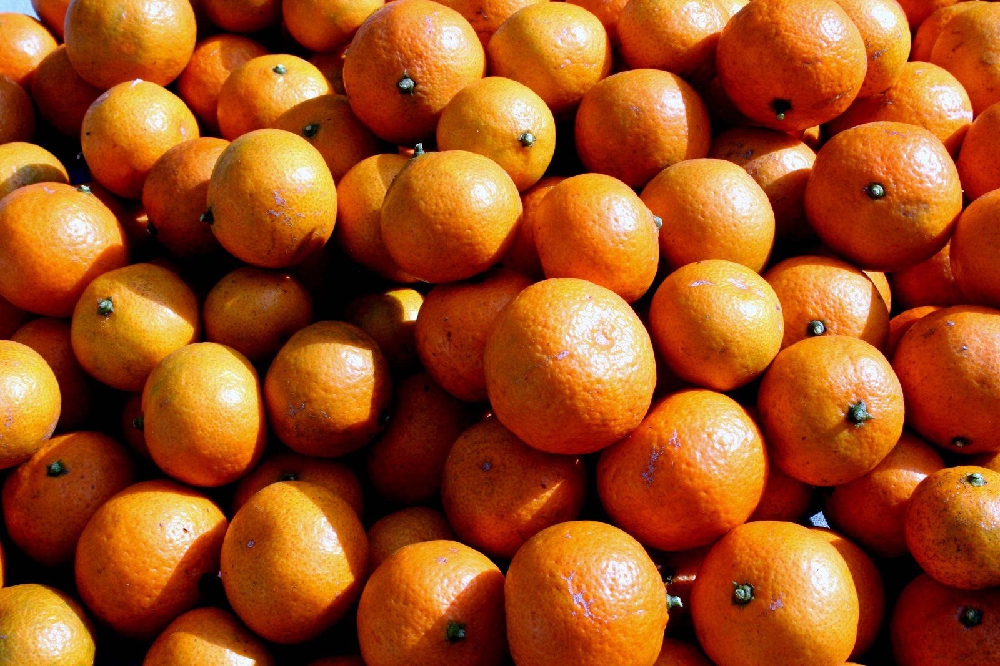
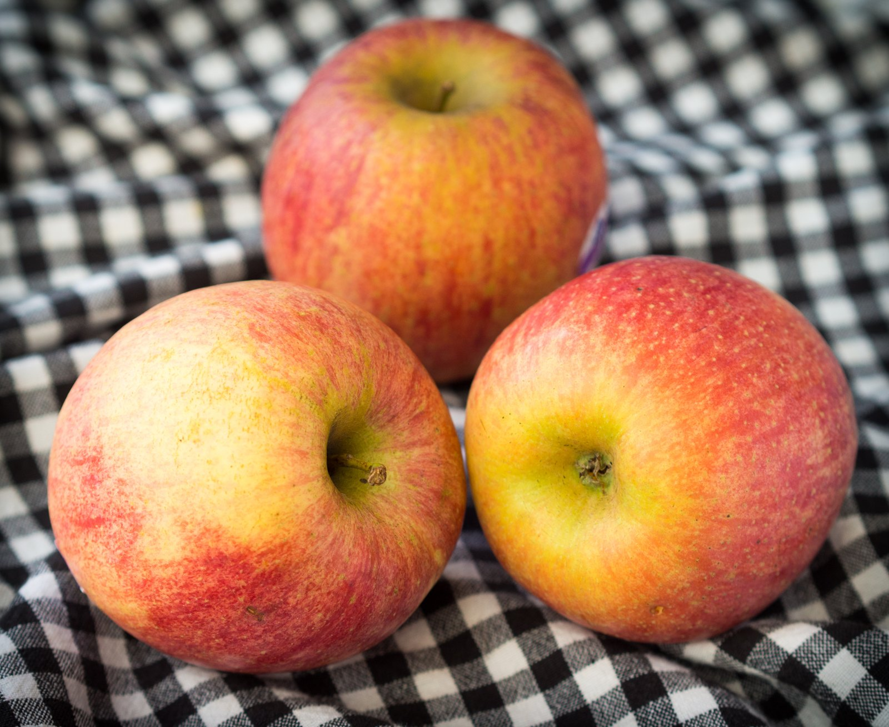
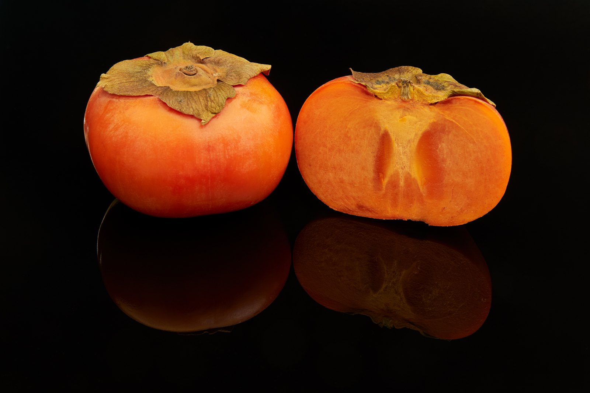

안녕하세요. dev.log입니다.
11월이면 슬슬 귤 한 봉지를 집에 들여놓고 싶어집니다. 사과와 단감도 한창 눈에 들어오는 때고요.
귤·사과·단감은 11월 제철 달력에도 나란히 올라 있습니다. 가을에 수확하는 국산 참다래도 빼놓기 아쉽고요. 늘 먹던 과일들이지만, 부사는 지금 수확하는 시기이고 참다래는 사 온 뒤 조금 기다려야 먹기 좋을 때도 있습니다.

온주밀감. 사진: Sfullenwider, Satsuma oranges, CC BY-SA 4.0. 크기 축소 및 JPEG 최적화.
| 과일 | 이맘때 살펴볼 것 | 고를 때는 |
|---|---|---|
| 귤 | 제철을 맞은 감귤 | 껍질이 얇고, 크기에 비해 묵직한 것 |
| 사과 | 늦가을 수확하는 부사 | 후지·부사 표시와 고른 외관 |
| 단감 | 아삭하게 먹는 가을 감 | 표면이 고르고 탄력 있는 것 |
| 국산 참다래 | 가을 수확 뒤 익혀 먹는 키위 | 오늘 먹는다면 살짝 말랑한 것 |
귤은 껍질과 무게를 살펴보세요
고를 때는 껍질이 얇고 단단하면서 크기에 비해 묵직한 것을 살펴보세요. 물론 겉모습만 보고 단맛까지 알아내기는 어렵습니다.
사과를 고른다면 부사부터

후지 사과. 사진: Takeaway, Fuji apples, CC BY-SA 4.0. 크기 축소 및 JPEG 최적화.
사과는 일 년 내내 보이다 보니 제철이 따로 있나 싶지만, 11월에는 부사를 살펴볼 만합니다. 후지라는 이름으로도 부르는 바로 그 사과입니다. 후지처럼 늦게 익는 품종은 10월 중순부터 11월에 수확하거든요.
봄이나 여름에 만나는 사과 중에는 가을에 수확해 저장해 둔 것도 있습니다. 반면 지금은 부사를 수확하는 시기인 만큼, 사과를 사려던 참이라면 품종 표시를 한 번 확인해 보세요. 품종 고유의 색과 고른 외관도 함께 살펴보면 좋고요.
아삭한 단감이 당기는 날에는

부유 단감과 단면. 사진: © Frank Schulenburg, Fuyu persimmon fruits, one cut open, CC BY-SA 4.0. 크기 축소 및 JPEG 최적화.
홍시의 부드러운 맛도 좋지만, 단감을 씹을 때의 아삭함이 더 당기는 날도 있습니다. 고를 때는 탄력이 있고 표면이 고른 단감을 찾아보세요.
아삭하게 두고 먹을 단감은 냉장 보관하되, 사과와는 따로 넣어 주세요. 사과가 옆 과일을 빨리 무르게 할 수 있기 때문입니다.
참다래는 먹을 날을 생각해서
참다래는 우리가 흔히 키위라고 부르는 과일인데, 국산 품종들도 가을에 수확합니다.
참다래는 당장 먹으려고 샀는데 돌처럼 단단하면 조금 아쉽죠. 오늘 먹을 거라면 살짝 눌렀을 때 조금 들어가는 것을 고르세요. 며칠 두고 먹을 생각이라면 단단한 것을 사 와 실온에서 익혀도 됩니다.
이렇게 따 놓은 과일을 익히는 것이 ‘후숙’입니다. 먹기 좋게 말랑해지면 그때 냉장고로 옮겨 두면 되고요.
사과를 같이 두는 게 좋을 때도 있어요
앞에서는 사과와 단감을 따로 두라고 했는데, 단단한 참다래를 빨리 먹고 싶을 때는 이야기가 조금 달라집니다.
사과에서 나오는 에틸렌이라는 기체가 과일이 익는 데 영향을 줍니다. 오래 두고 먹을 과일은 사과와 분리해 보관하는 편이 좋지만, 참다래를 빨리 익히려면 오히려 사과와 함께 두는 방법을 쓸 수 있습니다. 참다래가 말랑해지면 다시 분리해 냉장 보관해 주세요.